class: center, middle .title[Power and Ideology] .subtitle[The Formation of Violent Group Cooperative/Rivalrous Networks in Syria] .author[Laila A. Wahedi, PhD] .institution[MDI Fellow, <br> Georgetown University] .date[June 8, 2018] .center[] .footnote[Created with [{Remark.js}](http://remarkjs.com/) using [{Markdown}](https://daringfireball.net/projects/markdown/) + [{MathJax}](https://www.mathjax.org/) + [{Liminal}](http://www.jmlilly.net/liminal.zip)+ [{Flat Icon}](www.flaticon.com)] --- class: center background-color:#d86c1e .footnote[ Follow along at Wahedi.US, under Current Presentation Laila A. Wahedi, PhD -- @lwahedi -- law98@georgetown.edu] <!---Red: #AF002B---> <h2 style="text-transform: none; margin-bottom:0px;text-align:left;color:white;">Syrian Civil War: Unique Opportunity</h2> <img class="plain" src="../figures/line.png" style="float:left; padding:0;margins:0;margin-bottom:0px; align:left; height: 5px; width:75%"> <div style="width:100%;"> <h3 style="color:white;">Everyone had a cell phone</h3> <div style="width:24%; float:left"> <img style="width:35%" src="../figures/syria/twitter.png"> </div> <div style="width:24%; float:left"> </div> <div style="width:24%; float:left"> <img style="width:40%" src="../figures/syria/youtube.png"> </div> <div style="width:24%; float:left"> </div> --- class: center background-color:#d86c1e .footnote[Follow along at Wahedi.US, under Current Presentation Laila A. Wahedi, PhD -- @lwahedi -- law98@georgetown.edu] <h1 style="text-transform: none; color:white; text-align:left; margin-bottom:0px">Advantages</h1> <img class="plain" src="../figures/line.png" style="float:left; padding:0;margins:0;margin-bottom:0px; align:left; height: 5px; width:75%"> <div style="width:32%; float:left"> <h3 style="color:white;">High Resolution</h3> </div> <div style="width:32%; float:left"> <h3 style="color:white;">Dynamic</h3> </div> <div style="width:32%; float:left"> <h3 style="color:white;">System Level</h3> </div> --- class: center background-color:#d86c1e .footnote[ Follow along at Wahedi.US, under Current Presentation Laila A. Wahedi, PhD -- @lwahedi -- law98@georgetown.edu] <h1 style="text-transform: none; margin-bottom:0px;text-align:left;color:white;">Sources</h1> <img class="plain" src="../figures/line.png" style="float:left; padding:0;margins:0;margin-bottom:0px; align:left; height: 5px; width:75%"> <div style="width:100%;"> <br><br> <div style="width:32%; float:left"> <h3 style="color:white;"> Online Communities</h3></div> <div style="width:32%; float:left"><h3 style="color:white;"> | Aggregators |</h3></div> <div style="width:32%; float:left"><h3 style="color:white;"> Official Statements </h3></div> </div> --- class: center background-color:#d86c1e .footnote[Follow along at Wahedi.US, under Current Presentation Laila A. Wahedi, PhD -- @lwahedi -- law98@georgetown.edu] <h1 style="text-transform: none; color:white; text-align:left; margin-bottom:0px">Methodology</h1> <img class="plain" src="../figures/line.png" style="float:left; padding:0;margins:0;margin-bottom:0px; align:left; height: 5px; width:75%"> <div style="width:25%; float:left"> <h3 style="color:white;">Seed/ Source Discovery</h3> </div> <div style="width:25%; float:left"> <h3 style="color:white;">Edge First Pass</h3> </div> <div style="width:25%; float:left"> <h3 style="color:white;">Source Aggregation</h3> </div> <div style="width:25%; float:left"> <h3 style="color:white;">Manual Filtering</h3> </div> --- class: center background-color:#0057af .footnote[Follow along at Wahedi.US, under Current Presentation Laila A. Wahedi, PhD -- @lwahedi -- law98@georgetown.edu] <h1 style="text-transform: none; color:white; text-align:left; margin-bottom:0px">Cooperative Network Construction</h1> <img class="plain" src="../figures/line.png" style="float:left; padding:0;margins:0;margin-bottom:0px; align:left; height: 5px; width:75%"> <div style="width:25%; float:left"> <h3 style="color:white;">Groups to Umbrellas</h3> </div> <div style="width:25%; float:left"> <h3 style="color:white;">Observed Cooperation</h3> </div> <div style="width:25%; float:left"> <h3 style="color:white;">Joint Offensive</h3> </div> <div style="width:25%; float:left"> <h3 style="color:white;">Created Sub-Unit</h3> </div> --- class: center background-color:#AF002B .footnote[Follow along at Wahedi.US, under Current Presentation Laila A. Wahedi, PhD -- @lwahedi -- law98@georgetown.edu] <h1 style="text-transform: none; color:white; text-align:left; margin-bottom:0px">Rivalry Network Construction</h1> <img class="plain" src="../figures/line.png" style="float:left; padding:0;margins:0;margin-bottom:0px; align:left; height: 5px; width:75%"> <div style="width:32%; float:left"> <h3 style="color:white;">Battle</h3> </div> <div style="width:32%; float:left"> <h3 style="color:white;">Stated Rivalry</h3> </div> <div style="width:32%; float:left"> <h3 style="color:white;">Splinter</h3> </div> --- class: center background-color:#0057af .footnote[Follow along at Wahedi.US, under Current Presentation Laila A. Wahedi, PhD -- @lwahedi -- law98@georgetown.edu] <h2 style="text-transform: none; color:white; text-align:left; margin-bottom:0px">Cooperative Network</h2> <img class="plain" src="../figures/line.png" style="float:left; padding:0;margins:0;margin-bottom:0px; align:left; height: 5px; width:75%"> <br> <div style="width:100%;height:60%"> </div> --- class: center background-color:#0057af .footnote[Follow along at Wahedi.US, under Current Presentation Laila A. Wahedi, PhD -- @lwahedi -- law98@georgetown.edu] <h2 style="text-transform: none; color:white; text-align:left; margin-bottom:0px">Cooperative Network</h2> <img class="plain" src="../figures/line.png" style="float:left; padding:0;margins:0;margin-bottom:0px; align:left; height: 5px; width:75%"> <br> <div style="width:100%;"> <img style="width:80%;align:middle" src="../figures/syria/Zoom_coop.png"> </div> --- class: center background-color:#AF002B .footnote[Follow along at Wahedi.US, under Current Presentation Laila A. Wahedi, PhD -- @lwahedi -- law98@georgetown.edu] <h2 style="text-transform: none; color:white; text-align:left; margin-bottom:0px">Preliminary Rival Network</h2> <img class="plain" src="../figures/line.png" style="float:left; padding:0;margins:0;margin-bottom:0px; align:left; height: 5px; width:75%"> <br> <div style="width:100%;"> <img style="width:80%;align:middle" src="../figures/syria/rival_net.png"> </div> --- class: center background-color:#d86c1e .footnote[Follow along at Wahedi.US, under Current Presentation Laila A. Wahedi, PhD -- @lwahedi -- law98@georgetown.edu] <h1 style="text-transform: none; color:white; text-align:left; margin-bottom:0px">What Drives Alliance and Rivalry Behavior?</h1> <img class="plain" src="../figures/line.png" style="float:left; padding:0;margins:0;margin-bottom:0px; align:left; height: 5px; width:75%"> <div style="width:32%; float:left"> <h3 style="color:white;">Ideology</h3> </div> <div style="width:32%; float:left"> <h3 style="color:white;">Resources</h3> </div> <div style="width:32%; float:left"> <h3 style="color:white;">Power Relations</h3> </div> --- class: center background-color:#d86c1e .footnote[ Follow along at Wahedi.US, under Current Presentation Laila A. Wahedi, PhD -- @lwahedi -- law98@georgetown.edu] <h1 style="text-transform: none; margin-bottom:0px;text-align:left;color:white;">Public and Private Goods</h1> <img class="plain" src="../figures/line.png" style="float:left; padding:0;margins:0;margin-bottom:0px; align:left; height: 5px; width:75%"> <div style="width:100%;">  <br><br> <h2 style="color:white;">Tension between pressures to cooperate and compete</h2> </div> --- class: center background-color:#d86c1e .footnote[ Follow along at Wahedi.US, under Current Presentation Laila A. Wahedi, PhD -- @lwahedi -- law98@georgetown.edu] <h1 style="text-transform: none; margin-bottom:0px;text-align:left;color:white;">Time Horizons and Threat</h1> <img class="plain" src="../figures/line.png" style="float:left; padding:0;margins:0;margin-bottom:0px; align:left; height: 5px; width:75%"> <div style="width:100%;"> <br><br> <h2 style="color:white;">Variation: Tension depends on time horizon and threat</h2> </div> --- class: center background-color:#d86c1e .footnote[ Follow along at Wahedi.US, under Current Presentation Laila A. Wahedi, PhD -- @lwahedi -- law98@georgetown.edu] <h1 style="text-transform: none; margin-bottom:0px;text-align:left;color:white;">Expectation:</h1> <img class="plain" src="../figures/line.png" style="float:left; padding:0;margins:0;margin-bottom:0px; align:left; height: 5px; width:75%"> <div style="width:100%;"> <br><br> <h2 style="color:white;text-align:left">1. Homophily in rivalry and cooperation networks</h1> <br> <h2 style="color:white;text-align:left">2. Higher than average rivalry density within cooperative communities</h1> </div> --- class: center background-color:#d86c1e .footnote[ Follow along at Wahedi.US, under Current Presentation Laila A. Wahedi, PhD -- @lwahedi -- law98@georgetown.edu] <h1 style="text-transform: none; margin-bottom:0px;text-align:left;color:white;">Preliminary Findings: <br>It depends</h1> <img class="plain" src="../figures/line.png" style="float:left; padding:0;margins:0;margin-bottom:0px; align:left; height: 5px; width:75%"> <div style="width:100%;"> <br><br> <h2 style="color:white;text-align:left">Lower density in FSA communities, Higher density in Islamist Communities</h2> </div> --- class: center background-color:#d86c1e .footnote[Follow along at Wahedi.US, under Current Presentation Laila A. Wahedi, PhD -- @lwahedi -- law98@georgetown.edu] <h1 style="text-transform: none; color:white; text-align:left; margin-bottom:0px">Next Steps</h1> <img class="plain" src="../figures/line.png" style="float:left; padding:0;margins:0;margin-bottom:0px; align:left; height: 5px; width:75%"> <h1 style="color:white;text-align:left">Attack State Policy Point Control State Resources</h1> <div style="width:32%; float:left"> <h3 style="color:white;">External Actors</h3> </div> <div style="width:32%; float:left"> <h3 style="color:white;">Rivalry Coding</h3> </div> <div style="width:32%; float:left"> <h3 style="color:white;">ERGM</h3> </div> ---